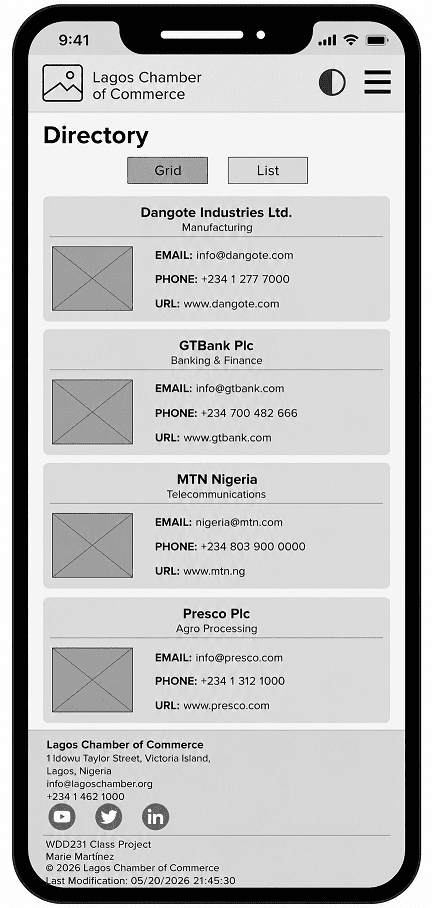
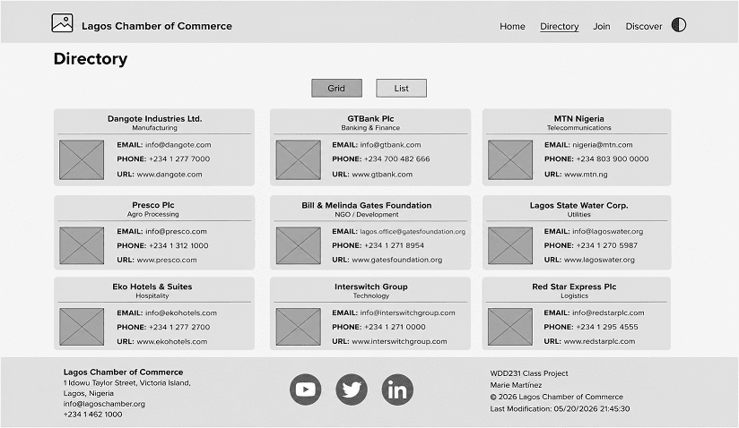

Site Name: Lagos Chamber of Commerce
The Lagos Chamber of Commerce website serves as an online platform that connects businesses, entrepreneurs, investors, residents, and visitors within Lagos State. The website promotes business growth, networking opportunities, local events, and community economic development.
Possible Domain: lagoschamber.org
Author: Godswill Moses Ikpotokin
Website Description: The Lagos Chamber of Commerce website provides information about businesses, chamber membership, upcoming business events, networking opportunities, investment resources, and economic activities taking place throughout Lagos State. The website also includes a business directory that helps residents and visitors discover local businesses.
The purpose of the Lagos Chamber of Commerce website is to support local economic growth by promoting businesses operating in Lagos, encouraging networking among entrepreneurs, providing information about business events, showcasing investment opportunities, and serving as a reliable resource for residents, visitors, and potential investors.
Name: Amina
Amina owns a fashion boutique in Ikeja. She wants to increase her business visibility, participate in business networking events, and connect with potential customers.
Name: Mr. Adewale
Adewale works for a multinational company. He wants investment opportunities, business partnerships, and economic reports concerning Lagos.
Name: Sarah
Sarah recently relocated to Lagos and wants to locate trusted businesses, restaurants, banks, healthcare providers, and upcoming community events.
The colors reflect professionalism, growth, trust, and the economic strength of Lagos.
HOME
│
┌─────────────┬──────┴─────────────┬─────────────┐
│ │ │ │
DISCOVER DIRECTORY JOIN CONTACT
│ │ │ │
│ │ │ │
Events Grid View Membership Contact Form
Weather List View Benefits Map
Spotlight Business Details Application Office Hours
The following wireframes illustrate the planned layout for both desktop and mobile devices.

